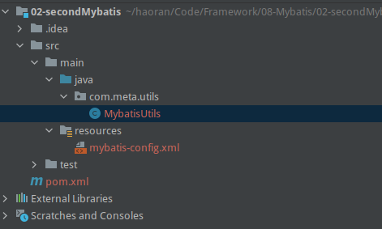

开始一个MYBATIS项目
Table of Contents
1. 本地创建数据库
本地创建一个名为 mybatis 的数据库，并添加一些表，这里只添加了一个用户表。
create database mybatis; use mybatis; create table mybatis.user ( id int auto_increment primary key, username varchar(30) not null, password varchar(30) not null, constraint user_id_uindex unique (id) );
插入一些测试数据：
insert into mybatis.user values (1, 'user01', '123456'), (2, 'user02', '123456'), (3, 'user03', '123456')
2. 新建一个 Maven 项目
我们的数据库里有 user 这个表，我们创建一个 maven 的项目，使用 mybatis 查询数据库中的 user 这个表。
创建 Maven 项目的过程就省略了，简单的创建就可以。
3. 添加依赖
在 pom.xml 中添加三个依赖：
- mysql
- mybatis
- junit，用来测试的
<!-- 添加依赖--> <dependencies> <!-- mysql驱动 --> <dependency> <groupId>mysql</groupId> <artifactId>mysql-connector-java</artifactId> <version>8.0.24</version> </dependency> <!-- mybatis --> <dependency> <groupId>org.mybatis</groupId> <artifactId>mybatis</artifactId> <version>3.5.2</version> </dependency> <!-- junit --> <dependency> <groupId>junit</groupId> <artifactId>junit</artifactId> <version>4.12</version> <scope>test</scope> </dependency> </dependencies>
还要配置 resources，防止资源导出失败，最终的 pom.xml 文件内容：
<?xml version="1.0" encoding="UTF-8"?> <project xmlns="http://maven.apache.org/POM/4.0.0" xmlns:xsi="http://www.w3.org/2001/XMLSchema-instance" xsi:schemaLocation="http://maven.apache.org/POM/4.0.0 http://maven.apache.org/xsd/maven-4.0.0.xsd"> <modelVersion>4.0.0</modelVersion> <groupId>org.example</groupId> <artifactId>02-secondMybatis</artifactId> <version>1.0-SNAPSHOT</version> <properties> <maven.compiler.source>8</maven.compiler.source> <maven.compiler.target>8</maven.compiler.target> </properties> <!-- 添加依赖--> <dependencies> <!-- mysql驱动 --> <dependency> <groupId>mysql</groupId> <artifactId>mysql-connector-java</artifactId> <version>8.0.24</version> </dependency> <!-- mybatis --> <dependency> <groupId>org.mybatis</groupId> <artifactId>mybatis</artifactId> <version>3.5.2</version> </dependency> <!-- junit --> <dependency> <groupId>junit</groupId> <artifactId>junit</artifactId> <version>4.12</version> <scope>test</scope> </dependency> </dependencies> <!-- 在 build 中配置 resources，来防止资源导出失败问题 --> <build> <resources> <resource> <directory>src/main/resources</directory> <includes> <include>**/*.properties</include> <include>**/*.xml</include> </includes> <filtering>true</filtering> </resource> <resource> <directory>src/main/java</directory> <includes> <include>**/*.properties</include> <include>**/*.xml</include> </includes> <filtering>true</filtering> </resource> </resources> </build> </project>
4. 添加 mybatis 配置文件
在 /src/main/resource 目录下添加 mybatis 配置文件，文件名一般使用 mybatis-config.xml。
<?xml version="1.0" encoding="UTF-8" ?> <!DOCTYPE configuration PUBLIC "-//mybatis.org//DTD Config 3.0//EN" "http://mybatis.org/dtd/mybatis-3-config.dtd"> <!-- 和行配置文件 --> <configuration> <!-- 可以配置多个环境，默认的环境是 development --> <environments default="development"> <environment id="development"> <transactionManager type="JDBC"/> <dataSource type="POOLED"> <!-- 驱动 --> <property name="driver" value="com.mysql.cj.jdbc.Driver"/> <!-- 数据库 url 路径 --> <property name="url" value="jdbc:mysql://localhost:3306/mybatis?useSSL=true&useUnicode=true&characterEncoding=UTF-8"/> <1-- 数据库用户名 --> <property name="username" value="root"/> <!-- 数据库密码 --> <property name="password" value="haoran232"/> </dataSource> </environment> </environments> </configuration>
5. 编写工具类连接接数据库

package com.meta.utils; import org.apache.ibatis.io.Resources; import org.apache.ibatis.session.SqlSession; import org.apache.ibatis.session.SqlSessionFactory; import org.apache.ibatis.session.SqlSessionFactoryBuilder; import java.io.IOException; import java.io.InputStream; // sqlSessionFactory --> sqlSession public class MybatisUtils { private static SqlSessionFactory sqlSessionFactory; static { try { // 1. 第一步，寻找资源，我们的资源路径已经在 mybatis 配置文件中设置好了 String resource = "mybatis-config.xml"; // 2. 把资源读取到流中 InputStream inputStream = Resources.getResourceAsStream(resource); // 3. 构建 sqlSessionFactory // SqlSessionFactory 一旦被创建就应该在应用的运行期间一直存在，没有任何理由丢弃它或重新创建另一个实例。 // 使用 SqlSessionFactory 的最佳实践是在应用运行期间不要重复创建多次，多次重建 SqlSessionFactory 被视为一种代码“坏习惯”。 // 因此 SqlSessionFactory 的最佳作用域是应用作用域。 有很多方法可以做到，最简单的就是使用单例模式或者静态单例模式。 sqlSessionFactory = new SqlSessionFactoryBuilder().build(inputStream); } catch (IOException e) { e.printStackTrace(); } } public static SqlSession getSqlSession() { // 通过 sqlSessionFactory 创建 sqlSession return sqlSessionFactory.openSession(); } }
6. 写实体类 User
新建一个包：model，创建一个实体类：User，对应数据库中的 user。
package com.meta.model; public class User { private int id; private String username; private String password; public User() { } public User(int id, String username, String password) { this.id = id; this.username = username; this.password = password; } public int getId() { return id; } public void setId(int id) { this.id = id; } public String getUsername() { return username; } public void setUsername(String username) { this.username = username; } public String getPassword() { return password; } public void setPassword(String password) { this.password = password; } @Override public String toString() { return "User{" + "id=" + id + ", username='" + username + '\'' + ", password='" + password + '\'' + '}'; } }
7. 写接口 UserMapper
使用 Mybatis 也还是需要一个接口，Mapper 是 Mybatis 中的一个概念，以后我们都会使用类似 UserMapper 这样的名字。
package com.meta.dao; import com.meta.model.User; import java.util.List; public interface UserMapper { List<User> getUserList(); }
8. 实现接口，编写 UserMapper.mxl
<?xml version="1.0" encoding="UTF-8" ?> <!DOCTYPE mapper PUBLIC "-//mybatis.org//DTD Mapper 3.0//EN" "http://mybatis.org/dtd/mybatis-3-mapper.dtd"> <!-- namespace 绑定一个对应的 Mapper 接口 --> <mapper namespace="com.meta.dao.UserMapper"> <!-- resultType 是返回类型，这里返回的是 List<User> 类型，但是只需要写 User 就行了 --> <select id="getUserList" resultType="com.meta.model.User"> select * from mybatis.user </select> </mapper>
9. 注册 UserMapper.xml
每一个 mapper.xml 都要在 mybatis 的核心文件中注册才能使用。
<?xml version="1.0" encoding="UTF-8" ?> <!DOCTYPE configuration PUBLIC "-//mybatis.org//DTD Config 3.0//EN" "http://mybatis.org/dtd/mybatis-3-config.dtd"> <configuration> <environments default="development"> <environment id="development"> <transactionManager type="JDBC"/> <dataSource type="POOLED"> <property name="driver" value="com.mysql.cj.jdbc.Driver"/> <property name="url" value="jdbc:mysql://localhost:3306/mybatis?useSSL=true&useUnicode=true&characterEncoding=UTF-8"/> <property name="username" value="root"/> <property name="password" value="haoran232"/> </dataSource> </environment> </environments> <!-- 加上这句 --> <mappers> <mapper resource="com/meta/dao/UserMapper.xml" /> </mappers> </configuration>
10. 然后编写测试代码，查看是否成功
package com.meta.dao; import com.meta.model.User; import com.meta.utils.MybatisUtils; import org.apache.ibatis.session.SqlSession; import org.junit.Test; import java.util.List; public class UserMapperTest { @Test public void test() { // 1. 获得 SqlSession 对象 SqlSession sqlSession = MybatisUtils.getSqlSession(); // 2. 执行 SQL // 方式一： UserMapper mapper = sqlSession.getMapper(UserMapper.class); List<User> userList = mapper.getUserList(); // 方式二（不建议使用）： // List<User> userList = sqlSession.selectList("com.info.dao.UserDao.getUserList"); // 3. 处理得到的数据 for (User user : userList) { System.out.println(user); } // 4. 关闭 SqlSession sqlSession.close(); } }